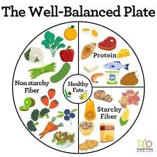
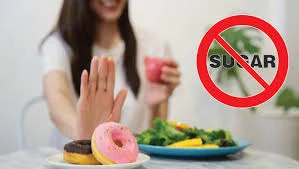
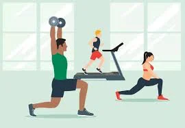
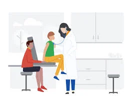
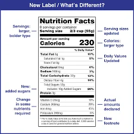
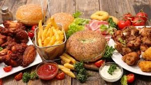
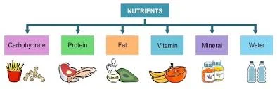
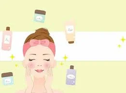

Looking back
& Project
Lesson 8 — Healthy habits posters
1Four stops in 45 minutes
- 🔤
Unscramble
Unit 1 words
5 min - 🔁
Looking back
Sounds · words · grammar
12 min - 🖼️
Project
Healthy habits posters
25 min - ✅
Wrap-up
Now I can…
3 min
Warm-up
Unscramble the words
5 minutesUnscramble · 1–5
1. V R I S U VIRUS
2. O N I C A T I B I T N ANTIBIOTIC
3. E C V I A N E C VACCINE
4. T H G S R N E T STRENGTH
5. R E N I T U N T NUTRIENT
Unscramble · 6–10
6. T M E E R T N T A TREATMENT
7. I E I G R N E D N T INGREDIENT
8. E S F N I T S FITNESS
9. R O K W U T O WORK OUT
10. F E U S F R SUFFER
Looking back
Pronunciation · vocabulary · grammar
12 minutesThen listen and check
1. Doctor: Have you been examined yet? A /hæv/ · B /həv/ B · /həv/
Nam: Yes, I have. A /hæv/ · B /həv/ A · /hæv/
2. Trainer: Can you do this exercise routine? A /kæn/ · B /kən/ B · /kən/
Nam: Yes, I can. A /kæn/ · B /kən/ A · /kæn/
What’s the word? · 1–4



What’s the word? · 5–8


What’s the word? · 9–12



Use the words you have learnt in this unit
1. We need to cut down on fast food if we don’t want to suffer from heart diseases in the future.
2. Working out regularly and having a balanced diet are the key to a healthy lifestyle.
3. Antibiotics are not used in the treatment of diseases caused by viruses.
Past simple or present perfect?
1. My grandfather has gone (A) to hospital last month. He is (B) fine now. A → went
2. Life expectancy has been (A) very low in (B) the past. A → was
3. My father used to do a lot of exercise (A) since (B) he was young. B → when
4. I was (A) ill last week, and didn’t do (B) much exercise so far this week. B → haven’t done
Find and fix the mistake
5. I catch a cold last winter. catch → caught
6. The clinic has offered free vaccinations last year. has offered → offered
7. She has visited the doctor last week for a check-up. has visited → visited
8. He practised yoga since last month. practised → has practised
9. They changed their diet recently. They felt better now. felt → feel
Project
Healthy habits posters
25 minutesDesign a poster to help teens develop a healthy habit
e.g. having a balanced diet · taking regular exercise · protecting yourself against diseases
- ❓
What?
What is the healthy habit?
- ⭐
Why?
What are the benefits of this habit?
- 🛠️
How?
How can we develop this habit?
Listen, ask and vote
- 🎤
Presenters
Show your poster. Answer the three questions. Use facts and figures.
- 📝
Audience
Take notes on the checklist. Ask one question.
- 🏆
Vote
The most attractive poster · the most interesting presentation.
Tick ✓, ✓✓ or ✓✓✓
- strong & weak forms
- health & fitness words
- past simple vs present perfect
- read about a healthy life
- give exercise instructions
- listen to a TV chat show
- write a short message
- offer help and respond
- bacteria vs viruses
- present a poster
Homework
1. Do the Looking back exercises in the workbook.
2. Improve your poster with your classmates’ feedback.
3. Get ready for Unit 2 — The Generation Gap.